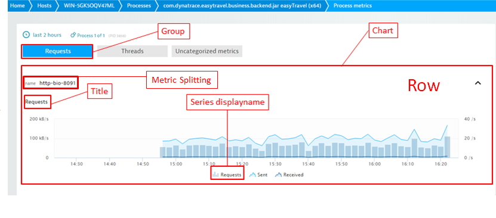

Plugin.json reference¶
Plugin.json consists of 4 main elements: metadata, metrics, visualization, and configuration. The basic format is as follows:
{
"name": "custom.python.demo_plugin",
"version": "1.000",
"type": "python",
"requiredAgentVersion": "1.90",
"entity": "PROCESS_GROUP_INSTANCE",
"technologies" : [
"PYTHON"
],
"source": {
"package": "demo_plugin",
"className": "DemoPlugin",
"install_requires": [
"requests>=2.6.0"
],
"activation": "Singleton"
},
"metricGroup": "My_Metrics.plugins",
"metrics": [
{
"timeseries": {
"key": "random",
"unit": "Count",
"displayname":".NET GC time"
}
},
{
"timeseries": {
"key": "counter",
"unit": "Count",
"displayname":"Counter Value"
},
"alert_settings": [
{
"alert_id": "custom_gc_alert_high",
"event_type": "PERFORMANCE_EVENT",
"event_name": "High GC time",
"description": "The {metricname} of {severity} is {alert_condition} the threshold of {threshold}",
"threshold": 35.0,
"alert_condition": "ABOVE",
"samples":5,
"violating_samples":3,
"dealerting_samples":5
}
]
}
],
"ui": {
"keymetrics": [],
"keycharts": [],
"charts": []
},
"configUI": {
"displayName": "DemoPlugin",
"properties": []
},
"properties": []
}
Metadata¶
Each plugin has the following properties:
| Field | Type | Mandatory | Description |
|---|---|---|---|
| version | String | Yes | The plugin version in format "d.d+(.d+)?", must be updated whenever the plugin definition is updated. |
| name | String | Yes | A unique plugin name in Java package format. Custom plugins should follow custom."jmx"|"python"| pmi"."a".."z"|"A".."Z"|"0".."9"|"_" | "-" rule. For example custom.python.MyNewPlugin_Ver1 or custom.jmx.azNewA-Ver2 |
| experimentalMinVersion productiveMinVersion | String | No | Those fields are used internally for build-in plugin releases and should not be used in custom plugins. |
| type | String | Yes | Possible values: "python" for python custom plugins data collection, "JMX" for collecting data from Java Mbeans. |
| requiredAgentVersion | String | No | Used to mark plugins that require a minimum OneAgent version. This should be used when new APIs are introduced in OneAgent. |
| entity | String | Yes | Entity type used in plugin activation rules and default assignment of metrics. Use "PROCESS_GROUP_INSTANCE". |
| metricGroup | String | Yes | Metric group is used for grouping custom metrics into a hierarchical namespace where different sources, for example multiple plugins can contribute. Moreover, metric group becomes primary part of metric key. Hence once defined it could not be changed. Allowed characters are: "a".."z"|"A".."Z"|"0".."9"|"_"|"-"|".". To add metrics to "Technology" group use prefix "tech." and technology group as defined in the: technologies group table. It is also possible to create own entry, for example: "My_Metrics.plugins" |
| processTypeNames | String Array | Need one | Type of process that plugin monitors, as defined in process type name of the known process types table. The method is kept for compatibility, we recommend to use improved "technologies" instead. |
| processTypes | Integer Array | Type of process that plugin monitors, as defined in the ID column of the known process types table. This serves as an alternative to processTypeNames. The method is kept for compatibility, we recommend to use improved "technologies" instead. | |
| technologies | String Array | Type of technology that plugin monitors, as defined in the known technologies table. |
If both technologies and processTypeNames/processType fields are set they all must match for a plugin to activate. Technologies can viewed on Technology overview page:
The preffered way of using Metric Group is adding prefix "tech" before your metric group definition. For example "tech.elasticsearch". Thanks to this other users will be able to find additional metrics alnogside with others in contex of technology like in this example on Custom Charts page:
MetricGroup field can be also used to create completely new entry. Note that you can use dots to create subgroups, like here in example "My_Metrics.plugins":
However, setting metricGroup field it is not needed for already exisiting and running plugins without it. In this case metricGroup will be set to be the same as plugin name automatically not to break continuity of your data.
Source section:
| Field | Type | Mandatory Field | Description |
|---|---|---|---|
| package | String | Yes | Package name which will be imported and executed by OneAgent. |
| className | String | Yes | Name of the plugin's main Python class. Must inherit from
BasePlugin. |
| install_requires | String Array | Relates to Python packaging, see: https://docs.python.org/3.6/distutils/setupscript.html. | |
| packages | String Array | Relates to Python packaging, see: https://docs.python.org/3.6/distutils/setupscript.html. | |
| package_data | String Array | Relates to Python packaging, see: https://docs.python.org/3.6/distutils/setupscript.html. | |
| modules | String Array | Relates to Python packaging, see py_modules in: https://docs.python.org/3.6/distutils/setupscript.html. | |
| activation | String | An additional parameter that controls the plugin activation process, possible values: 'Singleton' or 'SnapshotEntry'. Singleton means that only one plugin class instance will be created, no matter how many process groups of a given type are detected on the system. SnapshotEntry means that one plugin class instance will be created for each detected process group of a given type. If activation is not define 'SnapshotEntry' will be used. | |
| activation_name_pattern | String | Python regular expression pattern for matching process group name: https://docs.python.org/3.6/library/re.html#regular-expression-syntax. |
If activation_name_pattern is defined the pattern has to match Process Group name to activate plugin. Process Group Names is visible on Technology overview page:
Metrics¶
This part of the JSON defines which metrics are collected by the plugin. Each metric is defined by JSON in a format similar to the following:
{
"metrics": [
{
"entity": "PROCESS_GROUP_INSTANCE",
"timeseries": {
"key": "idx_tup_fetch",
"unit": "PerSecond",
"aggregation": "avg",
"dimensions": ["database"],
"displayname":"Fetch"
},
"source": {
"query": "db_stats['objects']"
}
}
]
}
This part specifies the metadata of a metric:
| Field | Type | Description |
|---|---|---|
| entity | String | Entity type metrics should be associated with. Inherited from plugin metadata if not provided here. |
| timeseries | Object | Specification for metric timeseries. See chart below. |
| source | Can be used to specify any valid JSON structure, to be processed by the Plugin. See MSSQL or MongoDB plugins for sample usage. |
Specification for metric timeseries is defined using following fields:
| Field | Type | Description |
|---|---|---|
| key | String | Metric name. Must be unique within this plugin. Only letters, numbers and "-" , "_" chars are allowed in metrics keys. |
| unit | Unit | Metric unit. Must be one of the available units described below. |
| aggregation | String | Time series data point aggregation (MIN/MAX/AVG/SUM). Default: AVG. |
| dimensions | String Array | Dimensions are used to provide 1 metric per plugin ObjectName key property value. For example, version, service, or database. Dimension "rx_pid" at index 0 means the system process ID (PID). Only letters, numbers and "-" , "_" chars are allowed in metrics dimensions. |
| displayname | String | Metric display name represent metric in Dynatrace. This field is obligatory. Must be different than metric key. |
Available units: NanoSecond, MicroSecond, MilliSecond, Second, Byte, KiloByte, MegaByte, BytePerSecond, BytePerMinute, KiloBytePerSecond, KiloBytePerMinute, MegaBytePerSecond, MegaBytePerMinute, Ratio, Percent, Promille, Count, PerSecond, PerMinute
Metrics alerts¶
This part of the JSON defines metrics alerts generated by Dynatrace Cluster Node. It is possible to define several alert settings per timeseries that is produced by the plugin.
This part specifies the metadata of metric alerts:
| Field | Type | Description |
|---|---|---|
| alert_id | String | Unique alert id. Only letters, numbers and "-" , "_" chars are allowed in alert_id. |
| event_type | String | String Allowed types: PERFORMANCE_EVENT, ERROR_EVENT, AVAILABILITY_EVENT. |
| description | String | Description defines alert message, following code snippets could be used: {threshold} the value of the custom threshold that was violated {severity} the violating value {entityname} the display name of the entity where the metric violated {violating_samples} the number of violating samples that led to that event {dimensions} a string containg the violating dimensions of the metric {alert_condition} a string showing if above or below threshold is alerting |
| event_name | String | Event name displayed on UI pages. |
| threshold | Float | The value of the threshold. |
| alert_condition | String | ABOVE or BELOW. |
| samples | Integer | Size of the “window” in which violating_samples are counted. |
| violating_samples | Integer | The number of violating samples that rise an alert. |
| dealerting_samples | Integer | The number of not violating samples that deactivate the alert. |
An example is shown below:
{
"timeseries":
{
"key":"TimeInGC",
"unit":"Percent",
"displayname":".NET GC time",
"dimensions":["rx_pid"]
},
"alert_settings": [
{
"alert_id": "custom_gc_alert_high",
"event_type": "PERFORMANCE_EVENT",
"event_name": "High GC time",
"description": "The {metricname} of {severity} is {alert_condition} the threshold of {threshold}",
"threshold": 35.0,
"alert_condition": "ABOVE",
"samples":5,
"violating_samples":3,
"dealerting_samples":5
}
],
}
In this case alert will be raised if 3 out of 5 samples will be above 35%. Alert will be deactivated if 5 samples in the row will be below 35%.
Visualization¶
This part of the JSON defines how metrics are charted on each Process page. It contains an optional charts section and an optional keycharts section. Each section has the same format and looks like this:
{
"ui" :
{
"keymetrics" : [
{
"key" : "requestCount",
"aggregation" : "avg",
"mergeaggregation" : "sum",
"displayname" : "Requests"
}
],
"keycharts" : [ ],
"charts": [ ]
}
}
The keymetrics section is completely optional and allows you to define up to two metrics that should be part of the Process infographic. It has the following attributes.
| Field | Type | Mandatory Field | Description |
|---|---|---|---|
| key | String | Yes | The key for the time series to put into the graphic. |
| aggregation | String | Time series data point aggregation (min/max/avg/sum/count). Default: AVG. | |
| mergeaggregation | String | If the metric contains multiple dimensions, this defines how to aggregate the dimension values into a single one. Default: AVG. | |
| displayname | String | The name to display in the graphic. Overwite metric displayname. Default: metric displayname. | |
| unit | Unit | Displayed unit. Must be one of the available units. Default: metric unit. |
Here is an example of a keymetric in web UI:
Each chart and keychart sections have the same format and look like this:
{
"group": "Section Name",
"title": "Chart Name",
"series": [
{
"key": "MetricName",
"aggregation": "avg",
"displayname": "Display name for metric",
"seriestype": "area"
},
{
"key": "Other Metric Name",
"aggregation": "avg",
"displayname": "Display name for metric",
"color": "rgba(42, 182, 244, 0.6)",
"seriestype": "area"
}
]
}
The charts section describes how to chart each metric in the details section of the process page (available by clicking Further details).
Both sections allow an array of charts to be defined. A chart has the following required attributes:
| Field | Type | Mandatory Field | Description |
| group | String | Yes | The section name that the chart should be put into. |
| title | String | Yes | The name of the chart. |
| description | String | Chart description. | |
| series | Array | Yes | An array of time series and charting definitions. One chart can contain multiple metrics. |
A series has the following attributes:
| Field | Type | Mandatory Field | Description |
|---|---|---|---|
| key | String | Yes | The key for the time series to chart. |
| displayname | String | Display name to show for the metric. Default: metric key. | |
| aggregation | String | How multiple minute values should be aggregated in charts when viewing a longer time frame. Possible values: SUM, AVG, MIN, MAX. Default: AVG. | |
| mergeaggregation | String | Key charts do not show multiple dimensions. If the metric contains multiple dimensions, this defines how to aggregate the dimension values into a single dimension. Default: AVG. | |
| color | String | HTML notation of a color (RGB or RGBA). Default: #00a6fb. | |
| seriestype | String | Chart type. Possible values are: line, area, and bar. Default: area. | |
| rightaxis | Boolean | If true, the metric will be placed on the right instead of the left axis. Note that web UI does support dual axis charts. Default: false. | |
| stacked | Boolean | If true, then multiple metrics will be stacked upon each other. This only works for area and bar charts. Default: false. | |
| unit | Unit | Displayed unit. Must be one of the available units. Default: metric unit. |
Keycharts are visible on each Process page. They look like this:

Other charts are available after drilling down into the Further details section of each Process page.
Plugin configuration¶
The plugin configuration section controls the plugin appearance in web UI at Settings > Monitored technologies and its configuration, for example: user name, password, connection string, etc.
The configUI section defines the configuration fields that are displayed in the UI. The properties section defines the configuration properties that are sent to the plugin.
The following sample shows how to define a plugin configuration:
{
"configUI" :{
"displayName": "HAProxy",
"properties" : [
{ "key" : "url", "displayName": "URL", "displayOrder": 3, "displayHint": "http://localhost:8080/haproxy-statistics" },
{ "key" : "auth_user", "displayName": "User", "displayOrder": 1 },
{ "key" : "auth_password", "displayName": "Password", "displayOrder": 2 }
]
}
}
The ConfigUI section has the following attributes:
| Field | Type | Mandatory Field | Description |
|---|---|---|---|
| displayName | String | Human readable plugin name. This name is displayed in web UI at Settings > Monitored technologies > Custom plugins once the plugin is uploaded. | |
| properties.key | String | Yes | Config property key, needs to match key from configUI properties section. |
| properties.displayName | String | Yes | Human readable property name. |
| properties.displayHint | String | Hint displayed in the tool-tip. | |
| properties.displayOrder | String | Determines display order on plugin configuration tile. |
If plugin configuration is required, the properties corresponding to the configuration UI must be defined. These properties carry the configuration values set in the UI for the plugin. Please refer to Providing configuration for further details regarding how to handle the configuration in plugin code.
Each property is defined by JSON in a format similar to the following:
{
"properties" : [
{
"key" : "url",
"type" : "String",
"defaultValue" : "https://localhost/haproxy_stats_ssl"
},
{
"key" : "auth_user",
"type" : "String",
},
{
"key" : "auth_password",
"type" : "Password",
"defaultValue" : "password"
}
]
}
The properties section has the following attributes:
| Field | Type | Mandatory Field | Description |
| key | String | Yes | Property key. Must be unique within this plugin and must match the key from configUI properties. |
| type | String | Yes | Possible values: 'STRING', 'BOOLEAN', 'INTEGER', 'FLOAT', 'PASSWORD'. For 'PASSWORD' stars will be displayed while typing. |
| defaultValue | Defined in'type' | Default value. |